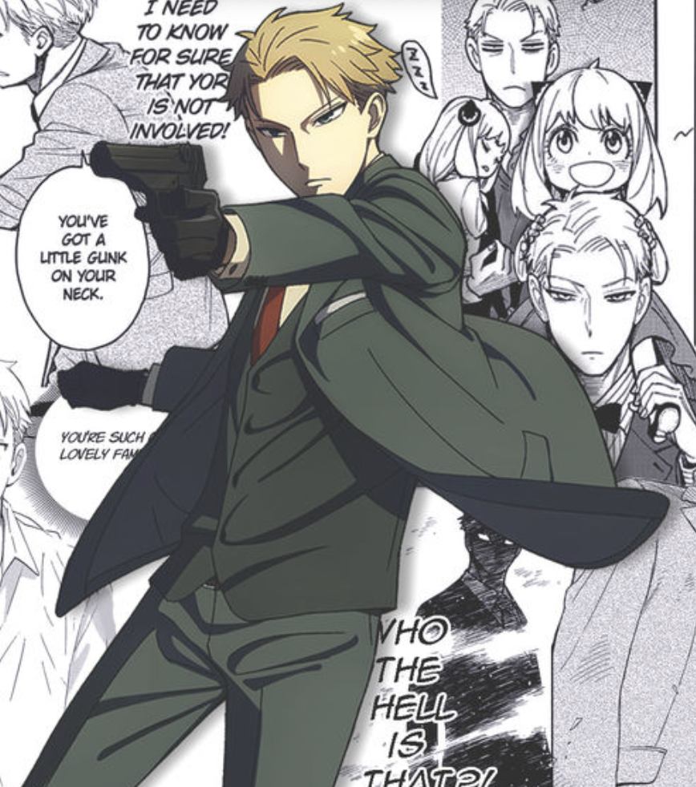
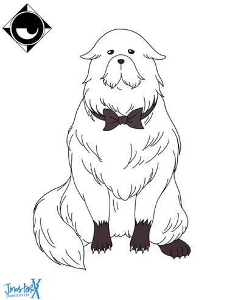

Loid Forger
He also known by his codename Twilight, is a highly skilled secret agent from the organization WISE. Calm, intelligent, and adaptable, he takes on dangerous missions to maintain peace between nations. To complete his latest mission, he creates a fake family, marrying Yor and adopting Anya. Despite his cold and logical nature as a spy, Loid gradually learns the warmth of family life and the meaning of love and trust.
Yor Forger
She known secretly as the assassin Thorn Princess, lives a double life as a loving wife and mother while working as a deadly killer. Skilled in hand-to-hand combat and stealth, she hides her dark profession behind a kind and gentle personality. Though she may seem clumsy in everyday life, Yor has a pure heart and genuinely cares for her family, cherishing the peace she never had before.
Anya Forger
She is a cheerful and curious little girl with the secret ability to read minds. Adopted by Loid as part of his undercover mission, she quickly becomes the heart of the Forger family. Her playful innocence, love for peanuts, and humorous misunderstandings bring warmth and laughter to the home. Though young, Anya often uses her telepathic powers to help her parents without them knowing.

Bond Foeger
Bond Forger is the family's loyal pet dog who possesses the mysterious ability to see the future. Rescued by the Forgers after a dangerous experiment, Bond quickly becomes Anya's best friend and protector. Despite his large and intimidating appearance, Bond is gentle, intelligent, and deeply devoted to his family, often using his powers to keep them safe from harm.